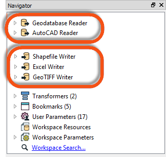
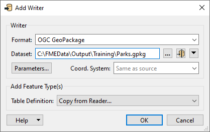
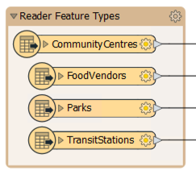
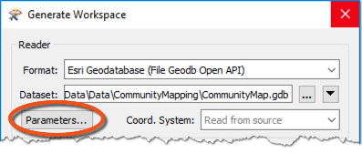
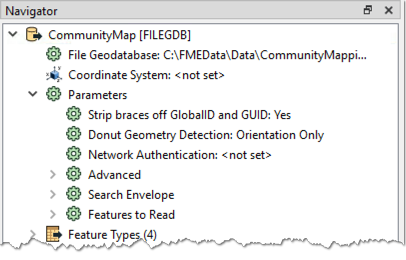
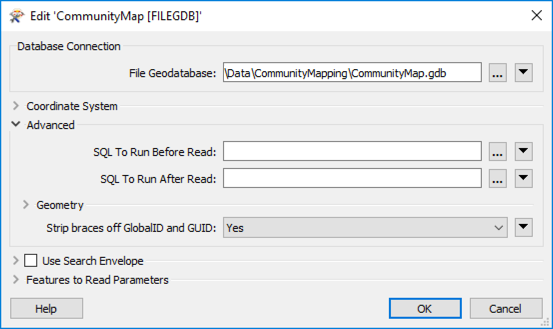
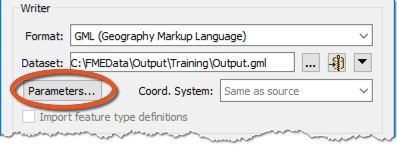
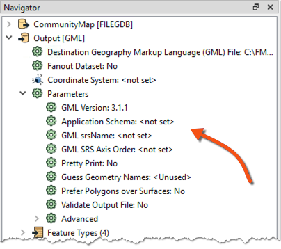
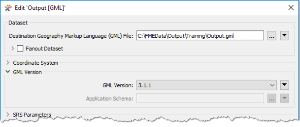

It's important to note that readers and writers don’t appear as objects on the Workbench canvas. Their feature types do, but readers and writers don't.
After completing this lesson, you’ll be able to:
By default, the Generate Workspace dialog creates a workspace with a single reader and writer. However, the workspace is still open to this. Additionally, FME can read/write data using:
An FME workspace is not limited to any particular number of readers or writers; readers and writers can be added to a workspace at any time, any number of formats can be used, and there does not need to be an equal number of readers and writers.
For example, the Navigator window below shows this workspace contains two readers and three writers, each with different formats.

It's important to note that readers and writers don’t appear as objects on the Workbench canvas. Their feature types do, but readers and writers don't.
Additional readers or writers are added to a translation using the Quick Add menu:

...Or by selecting Readers > Add Reader (Writers > Add Writer) from the menu bar:

This action opens a dialog, similar to the Generate Workspace dialog, in which the parameters for the new reader or writer can be defined:

You can add as many readers and writers as you require in this way.
A reader can also be added by dragging a dataset from a filesystem explorer and dropping it onto the Workbench canvas.
If a reader or writer is no longer required, then it can be removed using the menu bar:

Alternatively, it's possible to right-click a reader/writer in the Navigator window and choose the Delete option.
Readers and writers can be updated so that older workspaces have the speed and functionality available in a newer version of FME. You can update a reader/writer by right-clicking the reader/writer in the Navigator window and choosing the Update option:

This tool provides the option to update the reader or update the list of feature types being read. This way, the workspace can be updated if the source data changes. Another way to update feature types is Reader > Update Feature Types on the menu bar.
As we know, a workspace contains a reader to read a dataset, and each feature type in that dataset is shown in the workspace canvas:

To control how that reader operates requires the use of reader parameters.
Reader parameters can be located - and set - by clicking Parameters in the Generate Workspace or Add Reader dialogs:

They can also be found in the Navigator window in Workbench:

Because parameters refer to specific components and characteristics of the related format, readers of different formats have different control parameters.
Double-click on any of the parameters to edit a parameter in the Navigator window. Doing so opens up a dialog where the parameter’s value may be set:

Reader parameters control all feature types in the dataset. Think of it like brewing a pot of coffee. The strength control on the coffee machine affects all the cups poured.
Because some reader parameters affect how feature types are generated (e.g., how do you want to slice a JSON or XML file?), they can only be set when you add the reader. If you set them incorrectly or want to change them, you have to delete the reader and add it again.
Like readers, we know a workspace contains a writer to write a dataset, and each feature type to be written is shown in the workspace canvas:

To control how that writer operates requires the use of writer parameters.
Writer parameters can be located - and set - by clicking Parameters when a new workspace is being generated:

They can also be found in the Navigator window in Workbench:

Because parameters refer to specific components and characteristics of the related format, writers of different formats have different control parameters.
Double-click on any of the parameters to edit a parameter in the Navigator window. Doing so opens up a dialog where the parameter’s value may be set:

Like readers, writer parameters control all feature types in the dataset. For example, in the above screenshot, all feature types will be version 3.1.1.
But each reader and writer feature type has its settings, in the same way, that each cup of coffee can be adjusted with cream and sugar. You can learn more in the documentation.
One important consideration in overall workspace design is cross-OS compatibility. Generally, FME is designed so your workspaces will run on any of our supported operating systems. However, there are a few best practices to keep in mind that could save you from problems in the future. These include:
\/:*?"<>|, null, and / in your file and folder names. For more advice, see this thread.myObject and myobject, while others reject these fields as duplicate violations. Assuming case insensitivity is the safest method.